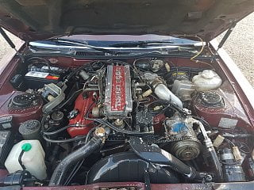

-
I'll start things off with I'm a jackass and washed my engine bay without checking the forums first. However I cleaned up my engine bay (looks pretty good) on my 84T which I just recently picked up. After I finished i started it up. It started FINE but was idling like crap. Like it was misfiring. I gave it a little throttle and it bogged down and died. Now it wont start at all just cranks. I've checked for water in the dizzy and the wires and the plugs. Everything seems dry. I can hear the fuel pump prime when I turn the key. Honestly I'm at a loss. -
If you have a leaf blower or air compressor, you could speed up the drying process. Did you check to see if you have spark yet? Might be fine after it dries out.
-
I checked spark off of the cyl 1 wire and Its there. It's been almost 10 hours. I pulled the wires and distributor off over night to let em dry. I dont have a blower or compressor unfortuanly. -
I wonder if the ruff idle caused you to jump timing for some reason. If you have spark and fuel you donât have much else. I would think by now everything should be dry. -
Same thing happened to me years ago with an 86 Turbo. I washed the engine compartment with a high pressure hose and neglected to cover the spark plugs. Water got inside one of the spark plug ports and the engine ran poorly because it was not all 6 cylinders were firing. The only way to fix it was to blow out the water with high compression air. That said, you'll have to take the car to a dealer or independent service facility to blow the air out for you. If you've got a friend with an air compressor, that'll save you a trip to the repair shop and some money. -
that's what ended up doing. Shes running great now.. lesson learned haha thanks everyone!Originally posted by jdmlegends View Post

Copyright © 2006–. All rights reserved. Privacy Policy